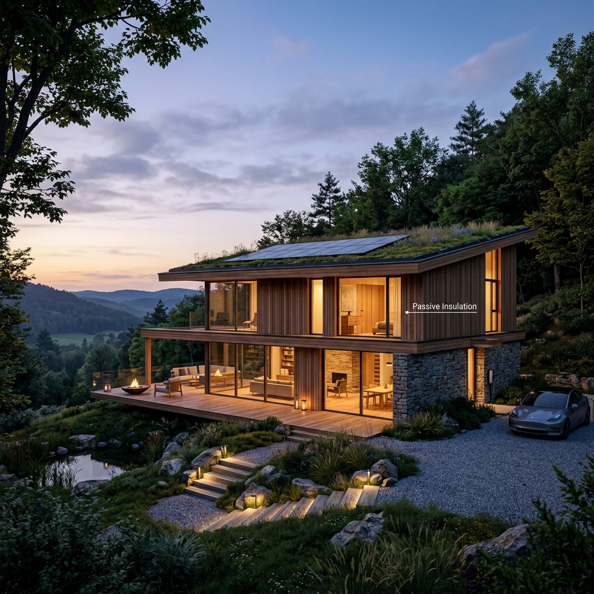

Obrazovanje
Šta je pasivna kuća i kako funkcioniše
Pasivna kuća više nije egzotičan koncept – to je evropski građevinski standard za decenije koje dolaze. Evo tačno kako funkcioniše i zašto je važno.
Pročitajte članak →